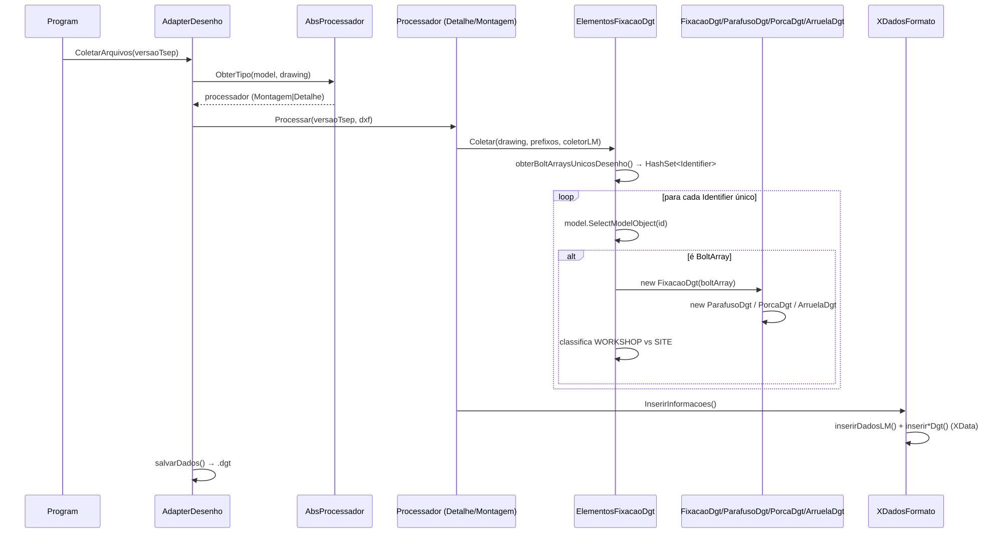

Projeto:
TNKDxf(soluçãoTNKDxf.sln) Escopo: entender como os parafusos (e porcas/arruelas) são lidos do modelo/desenho Tekla e gravados no ficheiro.dgt. Base: inspeção do código-fonte emConsoleTNKDxf(fluxo atual) eTNKDxf(aplicação WPF, sem tratamento de parafusos).
O .dgt não é um formato binário proprietário no código. Ele é, na prática:
Dwg.exe → pasta de plot).DxfDocument.Load), e nele são anexados XData (extended entity data) do AutoCad/DXF sobre linhas de referência do bloco de formato..dxf para .dgt.Ou seja, o "DGT" é um DXF enriquecido com XData que transporta a lista de materiais e as fixações (parafusos/porcas/arruelas). A chave de aplicação (APPNAME) usada é 08478f494deb.
Tekla (modelo + desenho)
│ exporta DXF (plot)
▼
arquivo .dxf (formato FORMATO_DET_A1)
│ DxfDocument.Load + XData anexado
▼
arquivo .dxf "enriquecido"
│ rename .dxf → .dgt
▼
arquivo .dgt
| Ficheiro | Papel |
|---|---|
ConsoleTNKDxf/Program.cs |
Ponto de entrada; conecta ao modelo e chama a exportação. |
ConsoleTNKDxf/ExportacaoDxf.cs |
Dispara o export DXF do Tekla (Dwg.exe). |
ConsoleTNKDxf/AdapterDesenho.cs |
Orquestra o processamento de cada desenho selecionado. |
ConsoleTNKDxf/Dgts/ProcessoTekla/AbsProcessador.cs |
Fábrica que decide o tipo de desenho (montagem vs. detalhe). |
ConsoleTNKDxf/Dgts/ProcessoTekla/ProcessadorDetalhamento.cs |
Processa desenhos de detalhe (parte). |
ConsoleTNKDxf/Dgts/ProcessoTekla/ProcessarMontagem.cs |
Processa desenhos de montagem (GA). |
ConsoleTNKDxf/Dgts/ElementosFixacaoDgt.cs |
Núcleo da extração de parafusos (desenho → BoltArray). |
ConsoleTNKDxf/Dgts/FixacaoDgt.cs |
Agrega parafuso + porca + arruela de um BoltArray. |
ConsoleTNKDxf/Dgts/ParafusoDgt.cs |
Lê os atributos do parafuso do BoltArray. |
ConsoleTNKDxf/Dgts/PorcaDgt.cs |
Lê os atributos da porca do BoltArray. |
ConsoleTNKDxf/Dgts/ArruelaDgt.cs |
Lê os atributos da arruela do BoltArray. |
ConsoleTNKDxf/Dgts/LmDetalhesDtg.cs |
Coletor da lista de materiais de detalhe + Ligar(...) fixações ao conjunto. |
ConsoleTNKDxf/Dgts/LmMontagemDgt.cs |
Coletor da lista de materiais de montagem. |
ConsoleTNKDxf/Dgts/LmAbs.cs |
Base abstrata dos coletores de LM. |
ConsoleTNKDxf/Dgts/ConjuntoDetalhadoDgt.cs / ConjuntoMontagemDgt.cs |
Representam um conjunto/marca na LM. |
ConsoleTNKDxf/Abstracoes/ConjuntoAbstrato.cs |
Base dos conjuntos; guarda FixacaoFabrica/FixacaoObra. |
ConsoleTNKDxf/Dgts/CamposDesenhoINP.cs |
Lê os campos de título do desenho (TITLE, TITLE1…). |
ConsoleTNKDxf/XDadosFormato.cs |
Núcleo da escrita no DGT (grava XData). |
ConsoleTNKDxf/Peca.cs |
Modelo interno de peça (PART_POS, ASSEMBLY_POS, FINISH). |
ConsoleTNKDxf/Extensoes.cs |
Helpers (ObterPropriedade, ConverterParaDouble, TeklaSubstring). |
| Ficheiro | Papel |
|---|---|
ConsoleTNKDxf/ElementosFixacao.cs |
Versão antiga da coleta (gera Parafuso/Porca/Arruela). |
ConsoleTNKDxf/Parafuso.cs, Porca.cs, Arruela.cs |
Modelos legados (implementam ILinhaLM). |
ConsoleTNKDxf/DescricaoParafuso.cs, DescricaoPorca.cs, DescricaoArruela.cs |
Descrições legadas com regras de texto. |
ConsoleTNKDxf/MaterialPorca.cs, MaterialArruela.cs |
Materiais legados por BOLT_STANDARD. |
ConsoleTNKDxf/Desenho.cs, ListaMateriais.cs, Conjunto.cs |
Caminho antigo de coleta (lista de materiais + fixações). |


O objeto no desenho é um TSD.Bolt (Tekla.Structures.Drawing.Bolt). O código não lê os atributos desse objeto gráfico; ele usa apenas o seu ModelIdentifier (GUID) para chegar ao objeto do modelo, que é o TSM.BoltArray (Tekla.Structures.Model.BoltArray).
view (TSD.View)
└─ GetObjects(typeof(TSD.Bolt))
└─ TSD.Bolt.ModelIdentifier ──(HashSet dedup)──▶ _model.SelectModelObject(id)
└─ TSM.BoltArray
// ElementosFixacaoDgt.obterBoltArraysUnicosDesenho()
var views = multiDrawing.GetSheet().GetAllViews().GetEnumerator();
while (views.MoveNext())
{
var view = views.Current as TSD.View;
DrawingObjectEnumerator drawingBolts = view.GetObjects(new[] { typeof(TSD.Bolt) });
while (drawingBolts.MoveNext())
{
TSD.Bolt drwBolt = drawingBolts.Current as TSD.Bolt;
boltArraysUnicosDesenho.Add(drwBolt.ModelIdentifier); // HashSet → deduplica por GUID
}
}
Por que HashSet<Identifier>? Para garantir que cada BoltArray seja contado uma única vez, mesmo que o mesmo parafuso apareça em várias vistas (frontal, topo, etc.).
Identifier ao BoltArrayforeach (Identifier modelId in boltArraysUnicosDesenho)
{
var modelObj = _model.SelectModelObject(modelId);
if (modelObj is TSM.BoltArray modelBoltArray)
{
addFixacoes(modelBoltArray); // caminho de DETALHE
// ou addParafuso(modelBoltArray, ...) // caminho de MONTAGEM
}
}
FixacaoDgtPara cada BoltArray é criado um FixacaoDgt, que agrega:

// FixacaoDgt(FixacaoDgt.cs)
_montagem = boltArray.BoltType.ToString(); // BOLT_TYPE_WORKSHOP | BOLT_TYPE_SITE
_numeroParafusos = boltArray.BoltPositions.Count;
_parafuso = new ParafusoDgt(boltArray, boltArray.PartToBeBolted);
incluirPorcasArruelas(boltArray);
_numeroArruelas = _numeroArruelas * _numeroParafusos;
_numeroPorcas = _numeroPorcas * _numeroParafusos;
A leitura dos atributos é sempre feita por propriedades de relatório do Tekla (GetStringReportProperties, GetDoubleReportProperties), e não por propriedades diretas da API.
BoltArray| Componente | Propriedade de relatório | Usada como |
|---|---|---|
| Parafuso | NAME |
identificação/posição (primeiros 4 chars na versão legada) |
NAME_SHORT |
material/descrição curta | |
PROFILE |
perfil/descrição | |
SITE_WORKSHOP |
classificação obra/fábrica (string) | |
WEIGHT |
peso unitário | |
BoltPositions.Count |
quantidade de parafusos do grupo | |
| Porca | NUT.NAME |
identificação da porca |
BOLT_STANDARD |
norma do parafuso | |
NUT.WEIGHT |
peso da porca | |
BoltPositions.Count |
quantidade | |
| Arruela | WASHER.NAME |
identificação da arruela |
BOLT_STANDARD |
norma do parafuso | |
WASHER.WEIGHT |
peso da arruela | |
BoltPositions.Count |
quantidade |
Peças ligadas pelo parafuso (via ParafusoDgt):
PecaChega = boltArray.PartToBeBolted (peça principal que recebe o furo/parafuso).PecaRecebe = boltArray.PartToBoltTo (peça aparafusada).Peca lê PART_POS → Posicao e ASSEMBLY_POS → MarcaMontagem.Porcas e arruelas presentes (flags do BoltArray):
if (boltArray.Nut1) processarPorca(boltArray);
if (boltArray.Nut2) processarPorca(boltArray);
if (boltArray.Washer1) processarArruela(boltArray);
if (boltArray.Washer2) processarArruela(boltArray);
if (boltArray.Washer3) processarArruela(boltArray);
Há duas grandezas distintas com nomes parecidos — atenção:
| Campo | Origem | Valores |
|---|---|---|
FixacaoDgt.Montagem |
boltArray.BoltType.ToString() |
BOLT_TYPE_WORKSHOP / BOLT_TYPE_SITE |
ParafusoDgt.Montagem |
propriedade SITE_WORKSHOP |
string do template (ex.: "Site"/"Workshop") |
A classificação para as listas usa FixacaoDgt.Montagem (o BoltType):


Detalhe (parte): a fixação só é aceite se a peça "chega" pertencer a um conjunto já coletado na lista de materiais (lm.ContemPeca), e depois é ligada ao conjunto certo via lm.Ligar(...), usando fixacao.Parafuso.PecaChega.MarcaMontagem (= ASSEMBLY_POS) para achar o ConjuntoDetalhadoDgt.
Montagem (GA): as fixações não são ligadas a um conjunto específico; vão para listas globais _fixacaoFabrica / _fixacaoObra.
XDadosFormato)O código localiza o bloco de formato FORMATO_DET_A1 e usa as suas linhas como âncora para o XData:
var blocoLista = _dxf.Entities.Inserts.FirstOrDefault(x => x.Block.Name.StartsWith("FORMATO_DET_A1"));
var linhasHorizontais = blocoLista.Block.Entities.OfType<Line>().Where(l => l.StartPoint.Y == l.EndPoint.Y).ToList();
var linhasVerticais = blocoLista.Block.Entities.OfType<Line>().Where(l => l.StartPoint.X == l.EndPoint.X).ToList();
linhaHorizontalMaisAlta = linhasHorizontais.OrderByDescending(l => l.StartPoint.Y).First(); // campos de título
linhaVerticalMaisDireita = linhasVerticais.OrderByDescending(l => l.StartPoint.X).First(); // lista de materiais
linhaHorizontalMaisBaixa = linhasHorizontais.OrderBy(l => l.StartPoint.Y).First(); // quadro de aplicação
APPNAME base = 08478f494deb.
| Prefixo | Conteúdo |
|---|---|
08478f494deb |
Campos de formato (título, projeto, escalas, versão TSEP, tipo de desenho). |
08478f494deb_M_{n} |
Cada conjunto/marca da lista de materiais. |
08478f494deb_I_{n}_ |
Peças (itens) do conjunto n. |
08478f494deb_I_{n}_PF{F|O}_ |
Parafusos ligados ao conjunto n (F= fábrica, O= obra). |
08478f494deb_I_{n}_PC{F|O}_ |
Porcas ligadas ao conjunto n. |
08478f494deb_I_{n}_AR{F|O}_ |
Arruelas ligadas ao conjunto n. |
08478f494deb_PF_{n}_ / _PC_ / _AR_ |
Lista global de elementos de obra. |
08478f494deb_PF_FAB_{n}_ / _PC_FAB_ / _AR_FAB_ |
Lista global de elementos de fábrica. |
08478f494deb_QA |
Quadro de aplicação (tag, quantidade, desenho, família). |

String)Parafuso — lista global (inserirParafusosDgt):
NAME, Quantidade, NAME_SHORT, WEIGHT
Parafuso — lista ligada ao conjunto (insereParafusoFabricaDgt):
NAME, Quantidade, NAME_SHORT, WEIGHT, PROFILE, PecaChega.Posicao, PecaRecebe.Posicao, Montagem
Porca (inserirPorcasDgt / inserePorcaFabricaDgt):
NUT.NAME, Quantidade, BOLT_STANDARD, NUT.WEIGHT
(a versão ligada ao conjunto usa a ordem NUT.NAME, BOLT_STANDARD, Quantidade, NUT.WEIGHT)
Arruela (inserirArruelasDgt / insereArruelaFabricaDgt):
WASHER.NAME, Quantidade, BOLT_STANDARD, WASHER.WEIGHT
(a versão ligada usa WASHER.NAME, BOLT_STANDARD, Quantidade, WASHER.WEIGHT)
.dgt// AdapterDesenho.salvarDados(...)
var caminhoSalvar = nomeArquivoProcessado.Replace(nome, $"Enviar\\{nome}");
dxf.Save(caminhoSalvar, true); // salva o DXF enriquecido
var caminhoSalvarR3D = caminhoSalvar.Replace(".dxf", ".dgt");
if (File.Exists(caminhoSalvarR3D)) File.Delete(caminhoSalvarR3D);
File.Move(caminhoSalvar, caminhoSalvarR3D); // .dxf → .dgt
File.Delete(caminhoSalvar);
File.Delete(nomeArquivoProcessado); // remove o DXF original da pasta de plot
pasta de plot (XS_DRAWING_PLOT_FILE_DIRECTORY)
└─ desenho.dxf ──▶ Enviar/desenho.dxf ──▶ Enviar/desenho.dgt

Identificação pelo desenho, dados do modelo. O TSD.Bolt do desenho só fornece o ModelIdentifier; toda a informação real (NAME, WEIGHT, porcas, arruelas, peças) vem do TSM.BoltArray do modelo. Por isso, o parafuso precisa existir no modelo para ser extraído.
BoltPositions.Count define a quantidade. A "quantidade" de parafusos/porcas/arruelas é o número de posições do grupo (BoltArray.BoltPositions.Count), não um contador de ocorrências no desenho.
Colapso de porcas/arruelas múltiplas. FixacaoDgt guarda uma única PorcaDgt e uma única ArruelaDgt. Se o BoltArray tiver Nut1 e Nut2 (ou Washer1/Washer2/Washer3), o segundo processarPorca/processarArruela sobrescreve o objeto anterior. Os contadores _numeroPorcas/_numeroArruelas são calculados mas não são expostos nem gravados no XData final.
Dois significados de "montagem". FixacaoDgt.Montagem vem de BoltType (WORKSHOP/SITE) e é o que classifica as listas; ParafusoDgt.Montagem vem de SITE_WORKSHOP (template) e é o que efetivamente vai para o XData do parafuso. Não confundir.
Classificação por BoltType. No caminho de detalhe (addFixacoes) a comparação é == "BOLT_TYPE_WORKSHOP" e == "BOLT_TYPE_SITE"; qualquer outro valor simplesmente não é ligado (fica sem destino). No caminho de montagem (addParafuso), tudo o que não é WORKSHOP cai em _fixacaoObra.
Filtro de peça no detalhe. Em addFixacoes, se lm.ContemPeca(fixacao.Parafuso.PecaChega.Posicao) for falso, a fixação é descartada. Isso garante que só se listam parafusos de peças efetivamente presentes na LM do desenho de detalhe.
Equals por referência. FixacaoDgt não sobrescreve Equals; Contains/FirstOrDefault(...Equals...) em Ligar/ligar usam igualdade de referência. Portanto, fixações "iguais" (mesmo parafuso) em BoltArrays diferentes não são agregadas — a deduplicação só ocorre a nível do Identifier (GUID) do desenho.
Código legado ainda presente. ElementosFixacao.cs, Parafuso.cs, Porca.cs, Arruela.cs, DescricaoParafuso.cs etc. formam um caminho mais antigo (com descrições formatadas como "PARAF SEXT …", "PORCA SEXT …", "ARRUELA LISA …" e regras de material por BOLT_STANDARD). Esse caminho não é chamado pelo fluxo DGT atual (Program.cs → AdapterDesenho → AbsProcessador), mas permanece no projeto.
Tipo de desenho decide o processador. AbsProcessador.ObterTipo usa reflexão para obter o Identifier do desenho, cria um Beam temporário com esse ID e lê TCNM_TIPO_DESENHO. GADrawing → montagem; MultiDrawing com TCNM_TIPO_DESENHO == "MONTAGEM" → montagem; demais MultiDrawing → detalhe.
Flags de controle via template. TCNM_CRIAR_LM e TCNM_LISTAR_PARAF controlam se a lista de materiais e a lista de elementos de obra são gravadas no XData (valores comparados a "NÃO").
O programa percorre as vistas de cada desenho selecionado, localiza os objetos gráficos
TSD.Bolt, resolve cada um para oTSM.BoltArraydo modelo viaModelIdentifier, lê os atributos de relatório (parafuso/porca/arruela + peças ligadas), classifica a fixação como fábrica ou obra, e grava tudo como XData anexado às linhas do bloco de formato do DXF — que por fim é salvo e renomeado para.dgt.